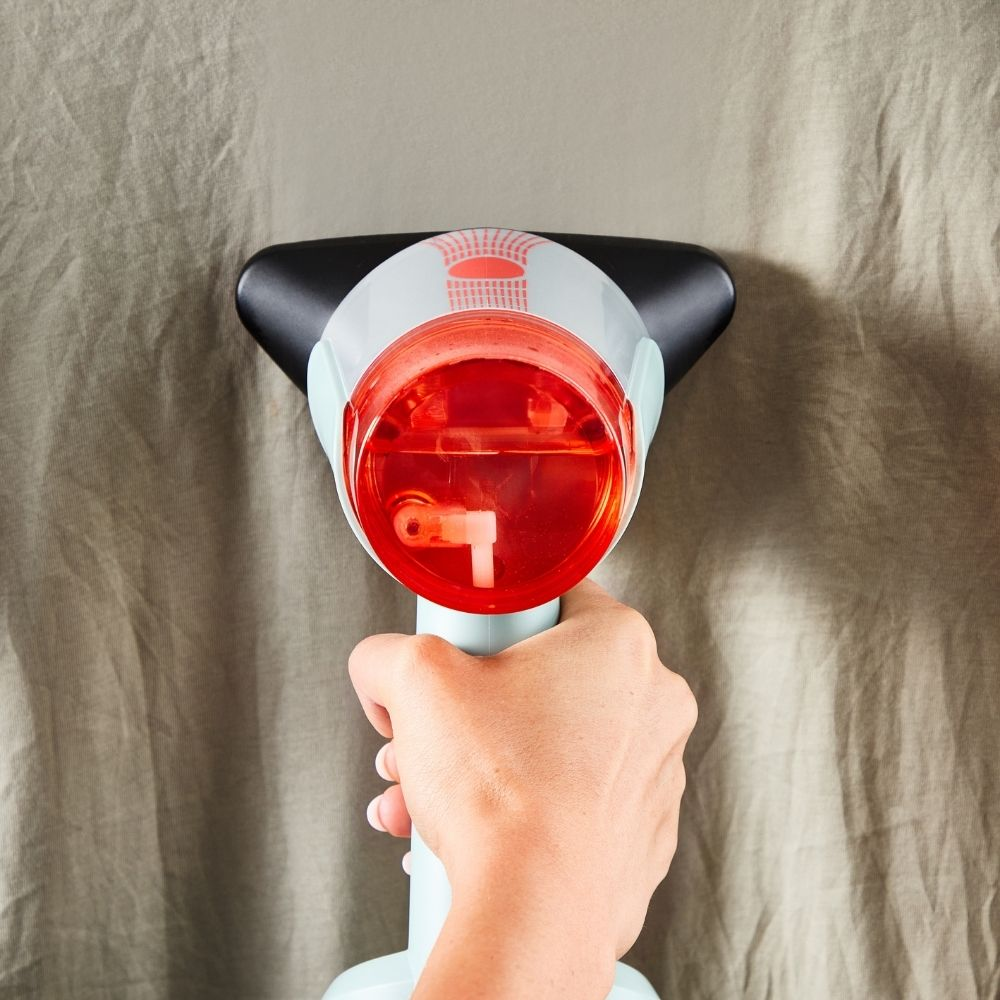
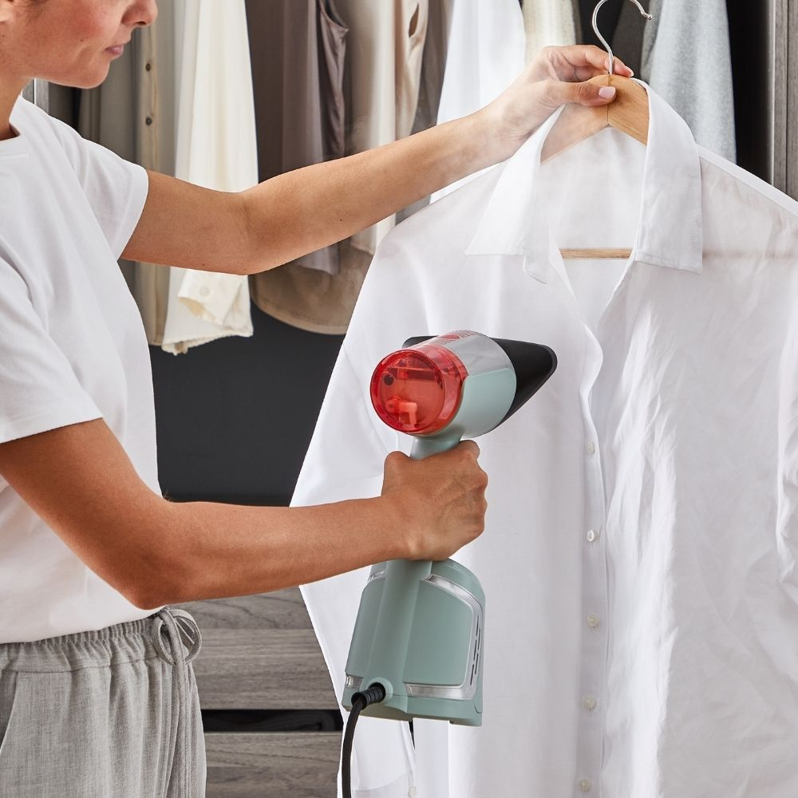
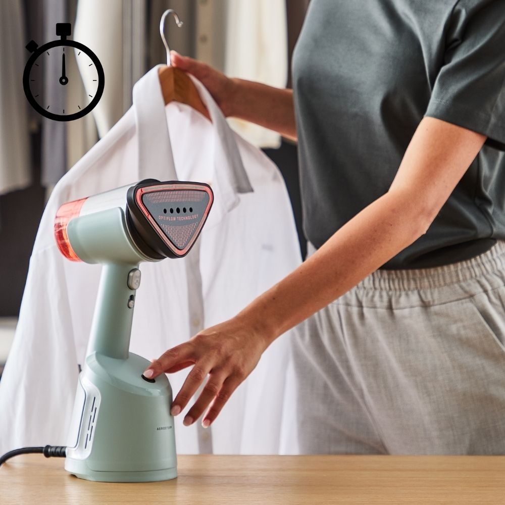
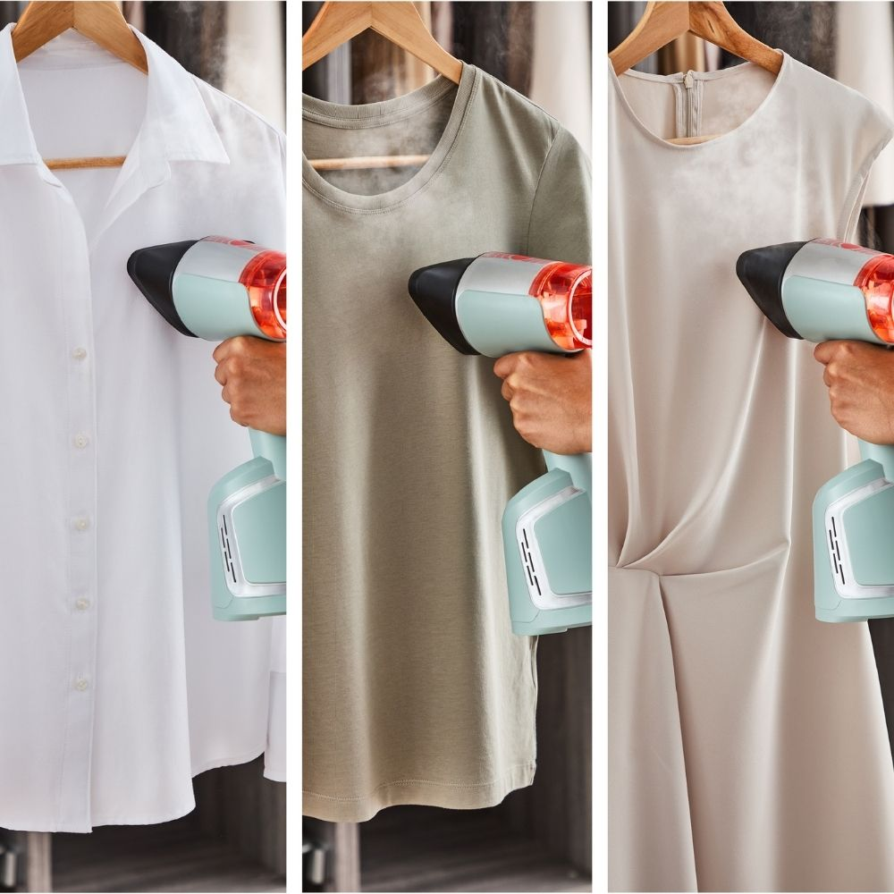
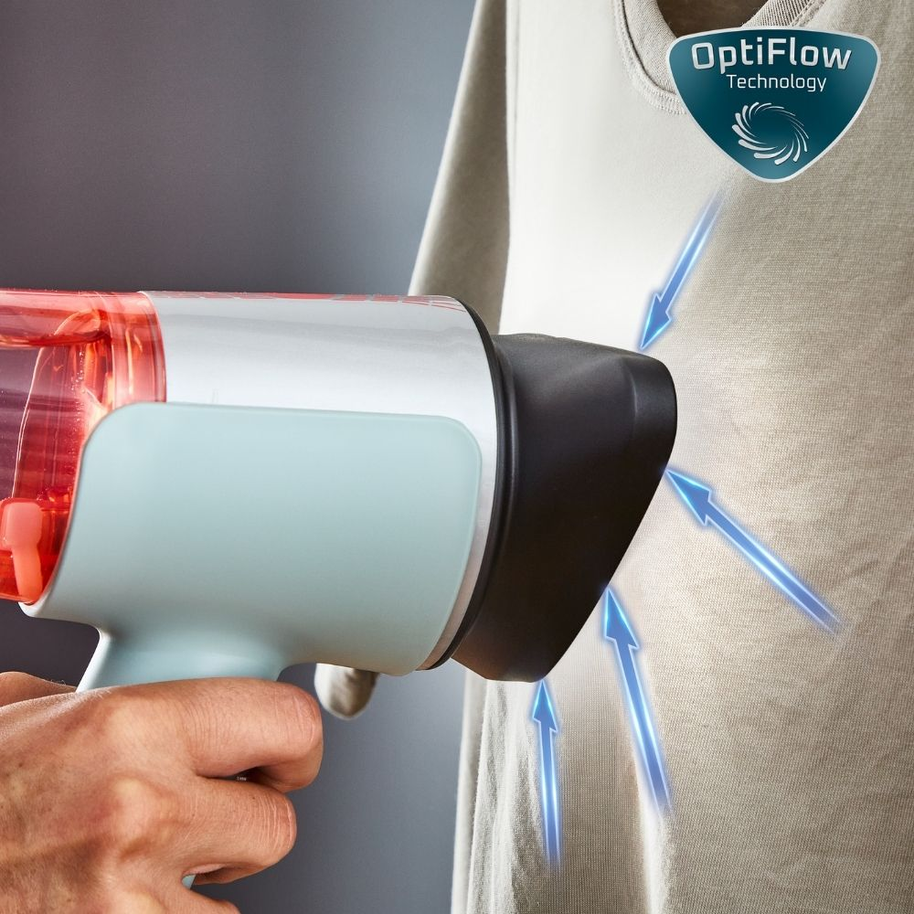
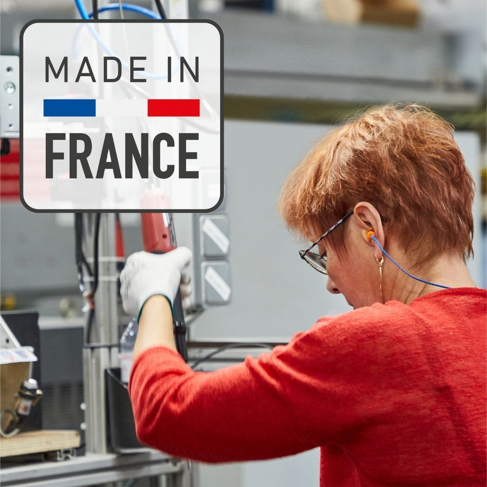
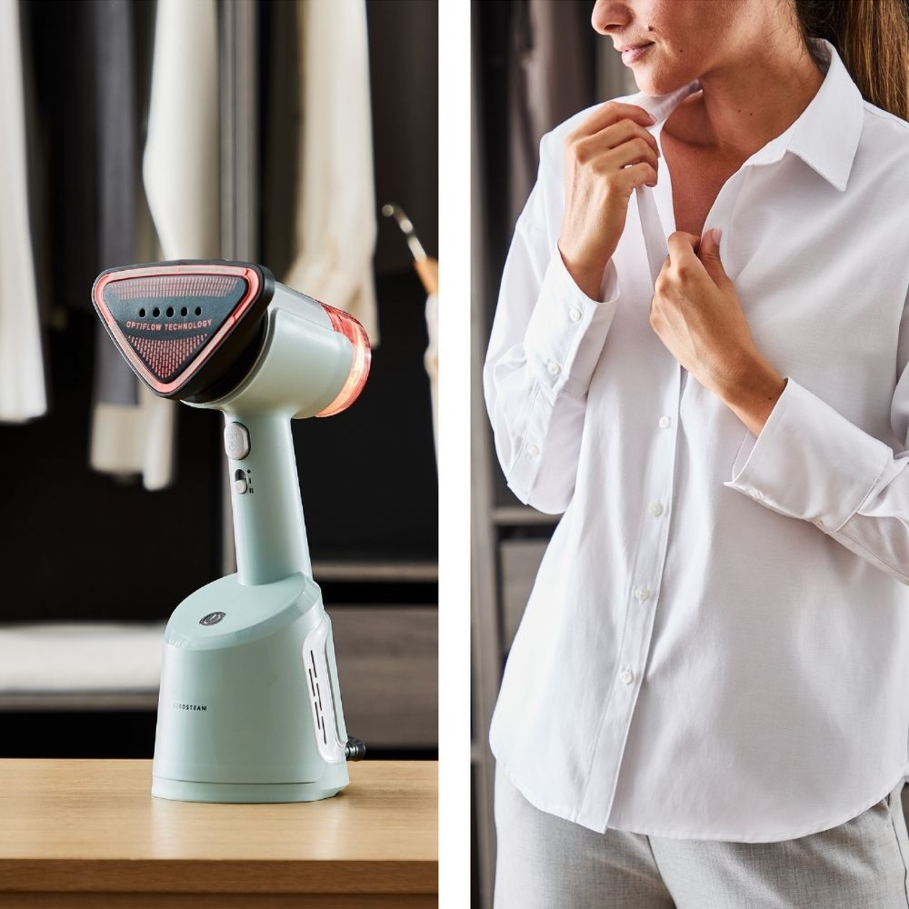

<style type="text/css">.product-description {
  max-width: 1200px;
  margin: 0 auto;
  padding: 40px 20px;
  background-color: #ffffff;
  color: #333;
}

.feature-grid {
  display: grid;
  grid-template-columns: repeat(4, 1fr);
  gap: 40px;
}

.feature-item {
  text-align: center;
  background-color: #ffffff;
  border-radius: 12px;
  padding: 20px;
  box-shadow: 0 3px 10px rgba(0, 0, 0, 0.08);
  transition: transform 0.3s ease, box-shadow 0.3s ease;
}

.feature-item:hover {
  transform: translateY(-5px);
  box-shadow: 0 5px 15px rgba(0, 0, 0, 0.15);
}

.feature-item img {
  width: 100%;
  height: auto;
  border-radius: 10px;
  margin-bottom: 15px;
  transition: transform 0.3s ease;
}

.feature-item img:hover {
  transform: scale(1.13);
}

.feature-item h5 {
  font-size: 1.1rem;
  color: #302f2f;
  font-weight: 600;
  margin-bottom: 10px;
}

.feature-item p {
  font-size: 0.95rem;
  line-height: 1.6;
  color: #555;
}

@media (max-width: 800px) {
  .feature-grid {
    grid-template-columns: 1fr;
  }
}
</style>
<section class="product-description-title" div="">
<h4><strong>Aerosteam Buharlı D&uuml;zleştirici</strong></h4>

<p>AeroSteam, yeni buharlı d&uuml;zleştirici &uuml;t&uuml; ile &ccedil;ekim g&uuml;c&uuml;n&uuml; deneyimleyin. AeroSteam&#39;in buharlama ve vakumlamayı kusursuz bir şekilde harmanlayan benzersiz OptiFlow son teknoloji &uuml;r&uuml;n&uuml; ile giysi bakımında devrim niteliğinde bir yolculuğa &ccedil;ıkın; tek bir hareketle kusursuz sonu&ccedil;lar elde edin. Bu &ccedil;ığır a&ccedil;an ve yenilik&ccedil;i el tipi buharlayıcı &uuml;t&uuml; ile giysi bakım rutininizi y&uuml;kseltin ve zahmetsizce m&uuml;kemmel sonu&ccedil;lar elde etmek i&ccedil;in yepyeni tek durak &ccedil;&ouml;z&uuml;m&uuml;n&uuml;z&uuml; keşfedin.</p>
</section>

<section class="product-description">
<div class="feature-grid">
<div class="feature-item">
<h5>Muhteşem verim</h5>

<p>Devrim niteliğindeki giysi bakımı, benzersiz OptiFlow teknolojimiz sayesinde tek bir hareketle* &ccedil;elik gibi neticeler sunarak muhteşem sonu&ccedil;lar almanızı sağlar.</p>
</div>

<div class="feature-item">
<h5>En kolay portatif buharlayıcımız</h5>

<p>Uzun buharlama seansları i&ccedil;in &ccedil;ıkarılabilir 100 ml&#39;lik bir hazne ile kapı kancasına veya karmaşık kuruluma gerek kalmadan zahmetsiz bir buharlama deneyimi.</p>
</div>

<div class="feature-item">
<h5>En hızlı portatif buharlayıcımız</h5>

<p>3 dakikadan kısa s&uuml;rede m&uuml;kemmel buharlanan bir g&ouml;mlek i&ccedil;in yenilik&ccedil;i teknolojiyle %50 daha hızlı zahmetsizce buharlama sonu&ccedil;ları*** elde edin. (***DR82&#39;ye kıyasla)</p>
</div>

<div class="feature-item">
<h5>Enerji tasarrufu</h5>

<p>OptiFlow teknolojisi %57&#39;ye kadar daha fazla enerji tasarrufu sağlar.**** (****Harici laboratuvar Haziran 2024 - Turbo modunda Tefal DR82&#39;ye kıyasla buhar+turbo emiş modunda)</p>
</div>

<div class="feature-item">
<h5>T&uuml;m &uuml;t&uuml;lenebilir tekstiller</h5>

<p>Monotemp taban ve 3 emiş seviyesi (sadece buhar, yumuşak emiş, turbo emiş) ile AeroSteam, en hassas olanlar da dahil t&uuml;m tekstil &uuml;r&uuml;nlerinde işe yarar.</p>
</div>

<div class="feature-item">
<h5>Patentli teknoloji</h5>

<p>Kumaşı tabana sıkıca bastıran ileri teknoloji patentli OptiFlow teknolojisi, tek ge&ccedil;işte zahmetsiz m&uuml;kemmel sonu&ccedil;lar elde etmenizi sağlar.</p>
</div>

<div class="feature-item">
<h5>Fransa&#39;da &uuml;retilmiştir</h5>

<p>&Ouml;d&uuml;n vermeyen kalite standardı ve iş&ccedil;iliği ile tamamen Fransa&#39;da tasarlanıp &uuml;retilmektedir.</p>
</div>

<div class="feature-item">
<h5>Anında giyilebilme</h5>

<p>Yoğuşmayı azaltan ısıtmalı taban teknolojisi sayesinde giysiler hoş bir şekilde kurur ve buharlamadan hemen sonra giyilmeye hazır hale gelir.</p>
</div>
</div>
</section>